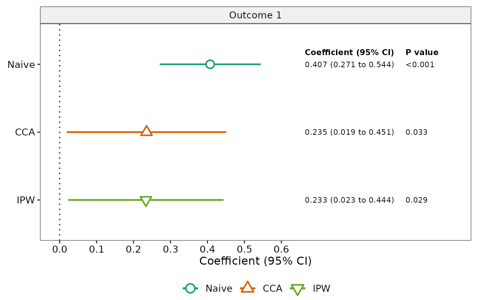

Plot sensitivity-analysis estimates and confidence intervals
Source:R/plot_sensitivity.R
plot_sensitivity.RdCreates a publication-style forest plot from a twophase_sensitivity()
object. Each method is shown with a method-specific color and symbol,
horizontal confidence interval, and optional right-side text columns for the
formatted coefficient/CI and p value. With multiple outcomes, outcomes are
shown in separate facets.
Usage
plot_sensitivity(
x,
outcome = NULL,
method = NULL,
outcome_labels = NULL,
method_labels = NULL,
reference_line = 0,
facet_scales = c("free_x", "fixed"),
x_label = NULL,
estimate_label = "Coefficient",
title = NULL,
annotate = TRUE,
estimate_digits = 3L,
p_digits = 3L
)
# S3 method for class 'twophase_sensitivity'
plot(x, ...)Arguments
- x
A
twophase_sensitivityobject.- outcome
Optional character vector selecting one or more outcomes.
- method
Optional character vector selecting one or more methods.
- outcome_labels
Optional character vector used to relabel outcomes. Supply either a named vector whose names are the outcome variable names or an unnamed vector in the same order as the selected outcomes.
- method_labels
Optional named character vector used to relabel methods.
- reference_line
Numeric scalar giving the vertical reference line. Use
NULLto omit the line. The default is 0.- facet_scales
Facet x-axis scaling for multiple outcomes:
"free_x"(default) or"fixed".- x_label
Optional x-axis label. If
NULL, a label is generated fromestimate_labeland the confidence level stored in the analysis object.- estimate_label
Label used for the numeric estimate column. The default is
"Coefficient". For a manuscript that reports adjusted betas, for example, useestimate_label = "Adjusted beta".- title
Optional overall plot title. Outcome labels are shown in facet strips, including when a single outcome is plotted.
- annotate
Logical; if
TRUE(default), add manuscript-style right-side columns for the coefficient with confidence interval and p value.- estimate_digits
Number of digits used in the coefficient and confidence-interval annotation.
- p_digits
Number of digits used in the p-value annotation.
- ...
Arguments passed to
plot_sensitivity().
Examples
dat <- twophase_example_data(n = 200, seed = 2026)
fit <- twophase_sensitivity(
data = dat,
outcome = "outcome1",
exposure = "exposure",
covariates = c("age", "sex"),
phase2_covariates = c("marker1", "marker2", "marker3"),
phase2 = "phase2",
methods = c("naive", "cca", "ipw"),
seed = 1001
)
plot_sensitivity(fit, outcome_labels = c(outcome1 = "Outcome 1"))
